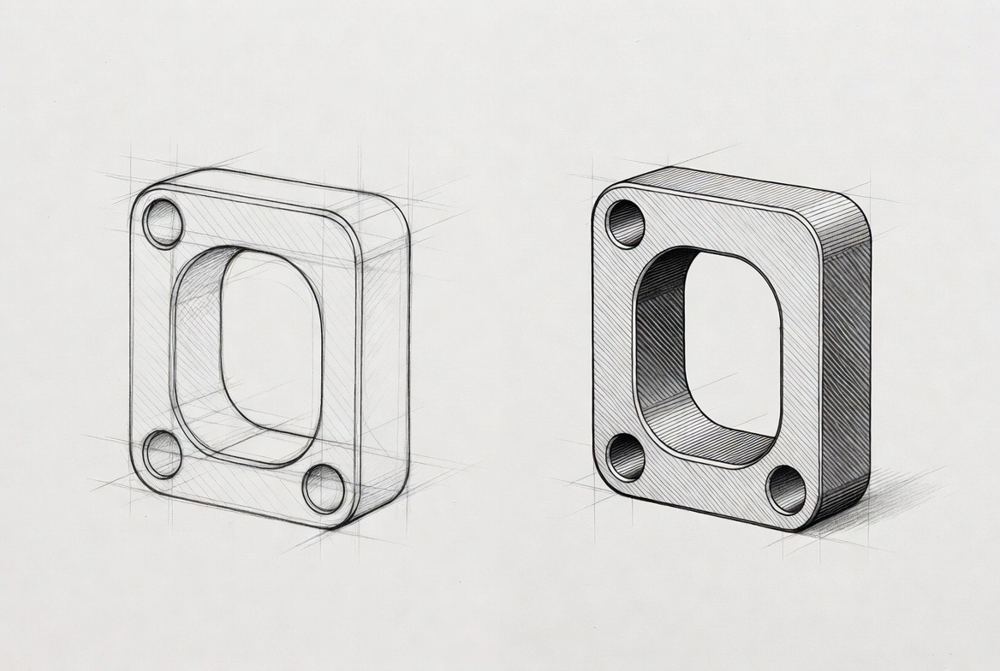
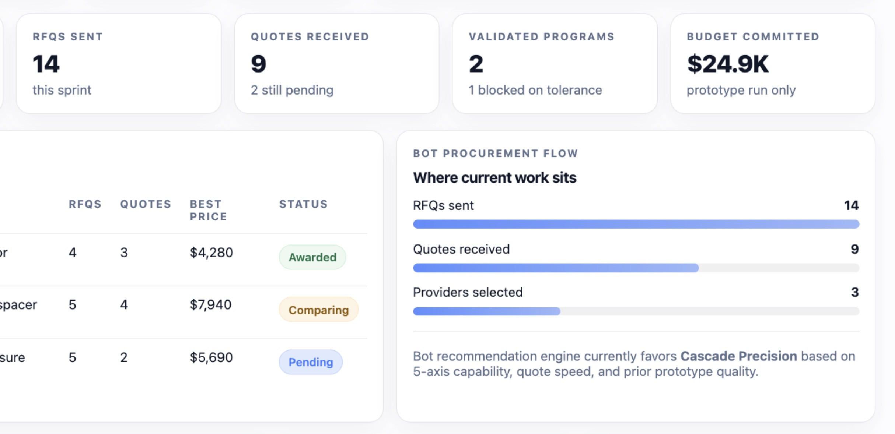
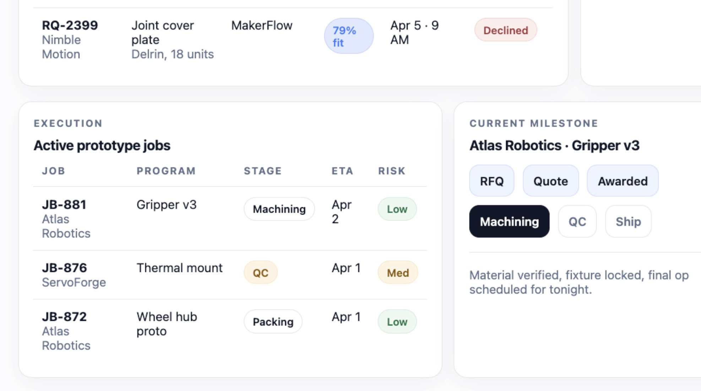

Builders
AI generates designs and optimizations at superhuman speed.
Manual builds and sourcing slow validation and scale.
Nuoli → build and validate faster.
Manufacturing for AI
Nuoli turns agent-generated work into physical builds, validation, and production routing.

Who We Serve
AI generates designs and optimizations at superhuman speed.
Manual builds and sourcing slow validation and scale.
Nuoli → build and validate faster.
Agents generate real-world work continuously.
No execution layer exists to fulfill it.
Nuoli → route work to real providers.
AI drives new CNC demand.
Manual quoting limits visibility and speed.
Nuoli → get discovered and win more jobs.
AI systems can create designs, production options, and sourcing requests continuously. Nuoli gives them a direct path into physical manufacturing.

Instead of chat and manual coordination, Nuoli validates assets, routes work, and prepares requests for the right CNC and manufacturing providers.
As agents generate more work, the shops that are easiest to route to, quote with, and trust will stay in the flow of demand.

From prototyping to production routing, Nuoli connects AI-generated work to real manufacturing outcomes.